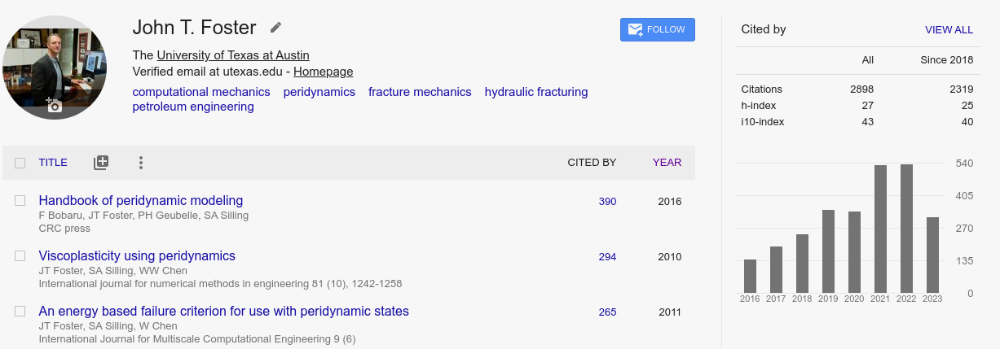
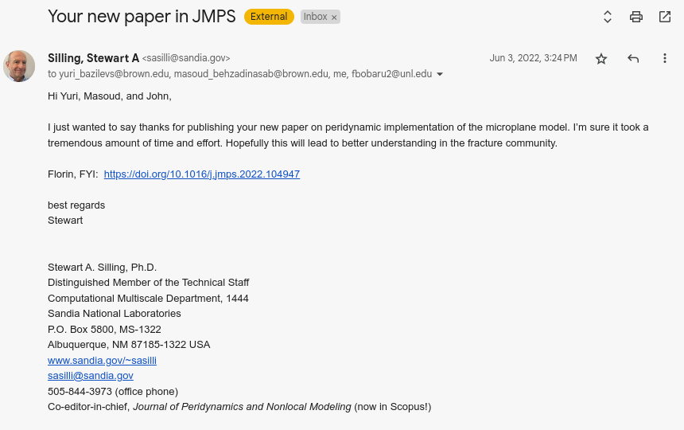
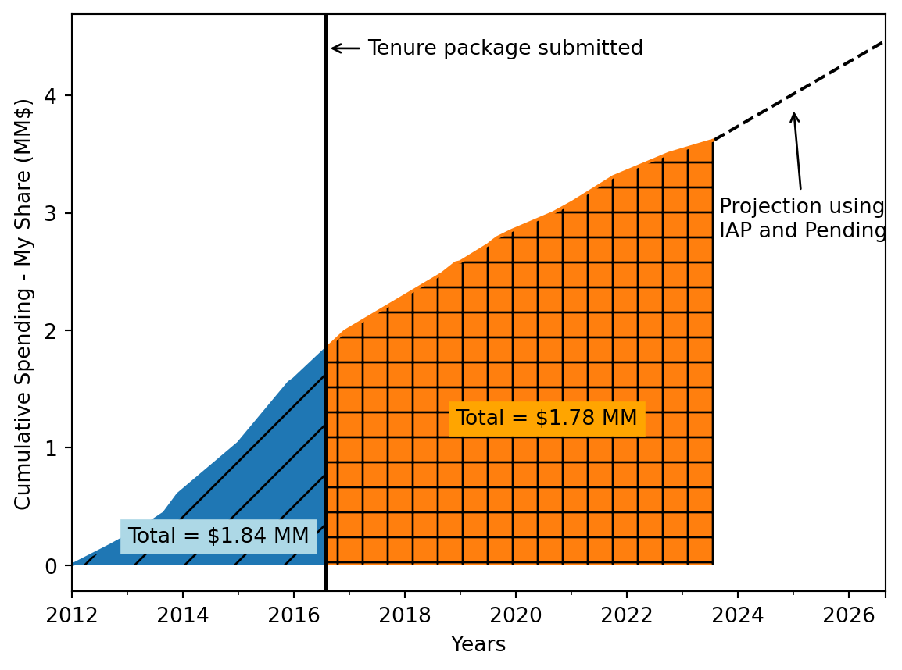

The tables below show research grants that have been awarded, pending, or proposed in the rank of associate professor. The total funds for the awarded and pending projects is $3.49 MM and my share of those awards is $1.16 MM.
Research Statement
Overview
I am primarily known for my theoretical and computational contributions to the relatively new field of peridynamics research. I am one of the highest cited researchers in the field and am the fourth largest code contributor to the most popular open source peridyamics code, Peridigm (>62k lines of code contributed, additionally UT graduate students have contribued >10k lines of code under my supervision). Peridynamics is one of the leading computational methods for modeling dynamic and pervasive material failure. It has been used at Boeing for composite material aircraft design, at Corning for the evaluation of glass in iPhones, and has been implemented in the popular commercial FEA software LS-DYNA as well as several other open-source codes. Peridigm has been used and cited in hundreds of studies/articles by researchers all over the world. I have worked on problems involving both brittle and ductile failure, participated in several Sandia Fracture Challenges, published several papers on new constitutive and failure theories, multiphysics and multiscale modeling, hydraulic fracturing, and recently published extensive numerical validation experiments on using peridynamics for complex concrete modeling effectively putting to rest some long standing (and high profile) criticisms of peridynamics.
My research has been supported through competitive grants from ARO, AFOSR through prestigious Young Investigator and MURI grants, Sandia National Laboratories and numerous energy companies. Recently, I shifted my research to focus on scientific machine learning applications in petroleum engineering, co-founding the DiReCT IAP research consortium with Prof. Michael Pyrcz in 2019. Our IAP is one of the most successful new IAPs in the Hildebrand Department with 9 companies (Chevron, ExxonMobile, Coterra, Equinor, Shell, Total, Japex, BP, Aramco) as current members each contributing $60k/year. Prof. Pyrcz leads the administrative aspects of the IAP, e.g. billing and organizing our annual meeting; whereas, I lead our organized efforts for open-source software distribution by administering our Github organization and instructing IAP graduate students on proper software engineering operations. We both supervise graduate student research projects individually and as co-supervisors (currently co-supervising 3 students together). Broadly, the IAP is focusing on data science and machine learning novel methods development to applications in petroleum engineering. Prof. Pyrcz’s research focus is primarly on geostatistics and petroleum reservoir modeling; whereas, I am working on incorporating physical constraints (e.g. engineering conservation laws) into machine learning methods. Our backgrounds and expertise compliment each other well, and we believe the IAP will provide sustained funding for many years into the future given the promise and interest of using data science and machine learning, i.e. “Artificial Intelligence”, for petroleum engineering decision making.
Publications
I have published more than 54 peer reviewed journal articles1 (>32 in rank) and book chapters. I co-edited and contributed to the book, Handbook of Peridynamic Modeling (>385 citations). I have consistently published in the top journals in mechanics and computational mechanics including CMAME (IF 6.6), JMPS (IF: 5.5), JCP (IF: 4.4), Computational Mechanics (IF: 4.4), IJSS (IF: 3.7) and others. One significant paper was on the front page of the respective journal as a “most downloaded article” continuously for over 10 years2,3! Another paper, on nonlocal frictional contact, is currently on the most downloaded page in the Journal of Peridynamics and Nonlocal Modeling. My overall citations are strong (>2890 citations) and growing, receiving more than 500 citations in each of the last two years (on pace for >600 citations in 2023). My \(h\)-index is currently 27, I have 8 published works with more than 100 citations and 3 with more that 200 citations. Finally, it’s worth noting that my citations have continued to grow in an upward trajectory given the field of peridynamics has been growing rapidly. A screen capture of my Google Scholar citations chart is shown in Figure 1.

Significant Research in Rank
What I consider to be one of my most significant works in rank was recently published in the Journal of Mechanics and Physics of Solids (paper 48 on CV). This paper implements an advanced microplane constitutive model (M7) developed by Prof. Zdeněk Bažant (NAS, NAE, AAAS, Royal Society of London, 7 honorary doctorates, etc.) and students over many years for concrete and other quasi-brittle materials. Prof. Bažant has long been a critic of peridynamics. After many unsuccessful conversations trying to convince him that peridynamics could be viewed as a regularized discritization technique that allows for straightforward modeling of material failure without mass loss, I initiated a research collaboration with Prof. Yuri Bazilevs and Dr. Masoud Behzadinasab at Brown University to demonstrate this claim clearly. Masoud was a recent UT-Engineering Mechanics PhD who graduated under my supervision. His PhD work had all the foundational elements for implementing the M7 model easily in our open source Peridigm code. Masoud and I implemented the M7 model that is distributed by Prof. Bažant as an Abaqus UMAT material model written in Fortran 90. Without changing a single line of the constitutive model code, we built a UMAT interface to Peridigm and ran 11 different numerical validation experiments. These tests all involved different stress loading paths and various fracture/notch tests to elucidate the effects of pressure dependence, stress triaxiality, size effects, and other factors on concrete failure. The results we published demonstrate good agreement with all 11 tests and the published computational results from Prof. Bažant’s group using a regularized finite element implementation. Unlike the finite element results, our peridynamics simulations also show fracture localization and fracture patterns that are more in agreement with experiments. I see this work as the culmination of many years of constitutive model development from my group to provide a stable and accurate discretization technique that can use any classical stress-strain constitutive model for fracture modeling. The papers directly related to kinematic measures and constitutive model development that lead to this work are papers 25, 30, 32, 34, 36, 39 on my CV (all published in rank). Additionally, papers 26, 38, 40 were related to high-order discretization techniques that were demonstrated to produce the numerically stable formulation used in this work. When this work was published, Dr. Stewart Silling from Sandia National Laboratories, the originator of peridyanmic theory and Distingushed Member of the Technical Staff (highest technical rank at Sandia) with over 18k citations, wrote us and personally thanked us for writing the paper, with the sentiment that the paper rebutted Prof. Bažant’s criticisms. A screenshot of this email is shown in Figure 2.

One of the papers mentioned above, paper 40, I also consider to be of high-significance. It was published in the SIAM Journal of Numerical Analysis. In that paper we present a discretization technique for nonlocal models based on reproducing kernel approximation theory that is proven to be “asymptotically compatible,” this means that the discrete solution converges to the nonlocal solution as the characteristic nonlocality is held fixed and the mesh is refined and converges to the local solution as the characteristic nonlocality vanishes along with mesh refinement. Additionally, it’s a nodally integrated collocation scheme; therefore it’s more computationally efficient than using Gauss integration techniques. We prove stability and convergence of the scheme by comparing to the Galerkin discretization of the nonlocal model which has previously proven to be stable. This paper demonstrates the mathematical rigor our group has applied to nonlocal computational mechanics novel method development.
Finally, with my shift in research focus towards scientific machine learning in 2019, I have published several papers on the topic including papers 42, 43, 47, 49–53. I believe the most significant of these is paper 47, published in Computer Methods in Applied Mechanics and Engineering in 2022. This paper presents a novel physics-informed neural network (PINN) architecture for uncertainty quantification. The idea is quite elegant in its simplicity and performs remarkably well. We construct a feed-forward neural network and add physical balance laws described by partial differential equations (PDEs) into the loss function that is minimized during training to “learn” the solution. The key novelty is that instead of a single output corresponding to the solution of the PDE, we allow for many outputs. Each output corresponds to the solution of the balance law for training data that has been sampled from a distribution. The data could correspond to uncertain measurements of the field quantities of the balance law, uncertain measurements of boundary/initial conditions, or uncertainty in material parameters depending upon whether a forward or inverse solution is desired (both are demonstrated in the paper). We show that we can train a single network to produce an ensemble of solutions that form a distribution. We demonstrate that this distribution agrees well with Monte Carlo simulations conducted by solving the PDEs via the finite element method. We present a method for quantitatively comparing the two distributions with accuracy measures. While PINN methods, when training time is amortized over some number of forward solution runs, often result in longer solution times with lower accuracy than traditional PDE solvers for forward problems (e.g. FEM), the MO-PINN technique can produce the uncertain distributions faster than traditional FEM-based Monte Carlo techniques. This is especially true for inverse problems. This technique has the potential for transformative impact in the field of uncertainty quantification for computational science and engineering.
Grants
| Role of Candidate | Names and Roles of Co-Investigators | Grant Title | Source of Funds/ Funding Agency | Project Total | Candidates Share | Period |
|---|---|---|---|---|---|---|
| PI | Assessing Capillary End Effects on Large Scale Tight Reservoir Drainage | American Chemical Society | $110,000 | $110,000 | 1/2021-12/2023 | |
| TOTAL | $110,000 | $110,000 |
| Role of Candidate | Names and Roles of Co-Investigators | Grant Title | Source of Funds/ Funding Agency | Project Total | Candidates Share | Period |
|---|---|---|---|---|---|---|
| PI | Student and Postdoc Travel Support for the 15th USNCCM in Austin, TX | NSF, Proj. No. 1935320. | $25,000 | $25,000 | 1/2019-8/2019 | |
| PI | ASCeND: ASymptotically Compatible strong form foundations for Nonlocal Discretization. | Sandia National Laboratories | $300,000 | $300,000 | 9/2018-10/2021 | |
| PI | MATNIP: Mathematical Foundations of Nonlocal Interface Problems | Sandia National Laboratories | $121,000 | $121,000 | 9/2020-10/2022 | |
| TOTAL | $446,000 | $446,000 |
| Role of Candidate | Names and Roles of Co-Investigators | Grant Title | Source of Funds/ Funding Agency | Project Total | Candidates Share | Period |
|---|---|---|---|---|---|---|
| co-PI | Espinoza, D (PI) | Hydrogen storage in salt caverns in the Permian Basin: Seal integrity evaluation and field test | DOE | $1,854,361 | $122,000 | 9/2023-8/2026 |
| TOTAL | $1,854,361 | $122,000 |
| Role of Candidate | Names and Roles of Co-Investigators | Grant Title | Source of Funds/ Funding Agency | Project Total | Candidates Share | Period |
|---|---|---|---|---|---|---|
| PI | SciML at CAMINO: Sandia Supplementary University Partnerships Proposal | Sandia National Laboratories | $525,000 | $525,000 | 10/2023-9/2026 | |
| co-PI | DOE Earthshot: Center for Multiscale Mechanics & Flow | Department of Energy | $20,000,000 | $909,274 | 1/2024-12/2027 | |
| co-PI | Sharma, M. (PI) | Calcined Petroleum Coke as a High-Temperature Diagnostic Proppant for Geothermal Applications | Department of Energy | $1,500,000 | $217,968 | 9/2023-8/2026 |
| TOTAL | $22,025,000 | $1,652,242 |
| Role of Candidate | Names and Roles of Co-Investigators | Grant Title | Source of Funds/ Funding Agency | Project Total | Candidates Share | Period |
|---|---|---|---|---|---|---|
| co-PI | Sharma, M. (PI) | GRA support for hydraulic fracture modeling with peridynmaics (Shivam Agrawal) | IAP on Hydraulic Fracturing | $67,664 | $33,832 | 1/2016-12/2019 |
| co-PI | Pyrcz, M. (co-PI) | DiReCT: Digital Reservoir Characterization Technology | DiReCT IAP | $960,000 | $420,000 | 7/2019-8/2023 |
| TOTAL | $1,027,664 | $453,832 |
| Role of Candidate | Names and Roles of Co-Investigators | Grant Title | Source of Funds/ Funding Agency | Project Total | Candidates Share | Period |
|---|---|---|---|---|---|---|
| co-PI | Pyrcz, M. (co-PI) | Hildebrand Seed Grant for Data Science Research Initiative | PGE | $50,000 | $25,000 | 1/2019-12/2019 |
| TOTAL | $50,000 | $25,000 |
It’s worth noting that I had two large grants, ARO ($345k) and AFOSR MURI (~$960k), that were awarded late in my assistant professor rank (therefore not shown in these tables, refer to CV) that carried over 2 and 3 years respectively after my tenure package was submitted. If we amortize the research spending of all awarded grants over time, we can see that I actually spent far more in rank than is indicated in the tables. This, along with the fact that my research is purely theoretical and computational (effectively only needing GRA support funds – no equipment) is how I was able to support the 8 PhD students who graduated under my supervision in rank and is a primary reason that I wrote fewer proposals during the first few years of my associate professor rank. Figure 3 illustrates the cumulative research spending for my share of research grants since coming to academia.
Additionally, I shifted my research direction significantly in 2019 towards scientific machine learning applications in petroleum engineering co-founding the DiReCT IAP with Prof. Michael Pyrcz. Our efforts in launching this IAP were severely impacted by the COVID19 pandemic (we launched with 5 companies committed to join and then had 3 summarily drop out in the Spring/Summer of 2020 due to budget concerns and widespread layoffs that affected the oil and gas industry during COVID). However, the future looks bright as we now have 9 companies, including 3 that signed agreements to join just in the first half of 2023. I have included a projection for future research spending (my share), assuming the 9 companies we currently have continue in the IAP as well as the pending proposals that have been notified of award (Table 3) in Figure 3.
